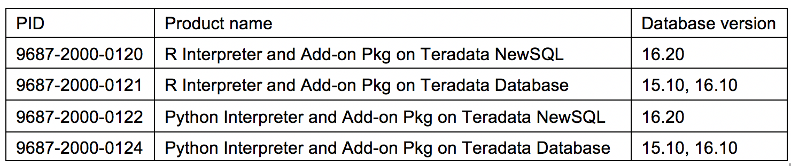

II. Requirements
Dataiku Data Science Studio version 5.1.2 or later
Dataiku DSS enterprise edition is required to import datasets from Vantage tables. Dataiku offers both downloadable and online options which can be obtained from the Dataiku website. The downloadable option can be configured to use the free or the enterprise edition, while the online option only comes in enterprise edition with free trial for a period of 14 days. A comparison between the two editions can be seen in the features table for Dataiku DSS Editions.
Teradata Vantage Analytic Functions plugin has been tested on Dataiku DSS version 5.1.2.
Plugin
To use the Teradata Vantage Analytic Functions plugin, you need the compressed file "TeradataVantageFunctionsPlugin.zip" that contains the Teradata Vantage Analytic Functions plugin software and metadata.
To use the SCRIPT Table Operator plugin, you need the compressed file "TeradataVantageScriptTOPlugin.zip" that contains the SCRIPT Table Operator plugin software and metadata.
Access Credentials
To use the plugins, you will need 2 different kinds of credentials, that is, one set for DSS and a second one for Vantage. Specifically:
Dataiku DSS user credentials allow a user to login to a DSS instance. Your DSS server administrator can provide you with these credentials.
Vantage credentials allow a user to connect to the Advanced SQL Engine Database of a Vantage system, and, with appropriate permissions, read and write tables into the Advanced SQL Engine. Your Vantage database administrator (DBA) can provide you with credentials and suitable permissions for one or more databases on a Vantage system.
Use your DSS user credentials to log on to a DSS instance, and then use your Vantage credentials to establish a connection between DSS and a Vantage system. Section III ("Creating A Vantage Connection") provides instructions on how to setup a DSS connection to a Vantage Advanced SQL Engine Database. It is suggested to create one connection per each database for which you intend to store output tables in.
Teradata JDBC Driver
The Teradata JDBC Driver 16.20 or later is required to establish a connection between DSS and a Vantage System.
Teradata Vantage Version 1.1 Both plugins require a connection to a Teradata Vantage system that minimally comprises of a Advanced SQL Engine. Teradata Vantage Analytic Functions Plugin The Teradata Vantage Analytic Functions Plugin for Dataiku DSS integrates about 180 of the Teradata Vantage Analytic Functions Plugin further requires a Vantage System v.1.1. For this plugin, if your Vantage v.1.1 system only has a Advanced SQL Engine, then only the analytic functions built into the Advanced SQL Engine will be available to the plugin, and namely, the following functions:
- Attribution
- nPath
- Sessionize
- DecisionTreePredict
- DecisionForestPredict
- GLMPredict
- SVMSparsePredict
- NaiveBayesPredict
NaiveBayesTextClassifierPredict The Machine Learning and Graph engine is required to completely leverage all capabilities of the Teradata Vantage Analytic Functions Plugin. SCRIPT Table Operator Plugin
To use the SCRIPT Table Operator Plugin with a Vantage system Advanced SQL Engine and execute R and Python scripts in the Advanced SQL Engine nodes, one of the following R and/or Python bundles need to be installed directly on each node of the Advanced SQL Engine: 
Moreover, your DBA must grant you in advance the additional following privileges:
EXECUTEFunction privilege onTD_SYSFNLIB.SCRIPTThis is needed in order to invoke the SCRIPT Table Operator.EXECUTEprivilege on the functionsSYSUIF.INSTALL_FILE,SYSUIF.REMOVE_FILE, andSYSUIF.REPLACE_FILE.